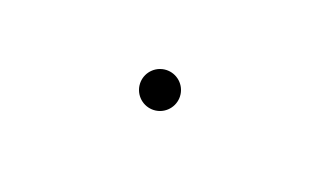
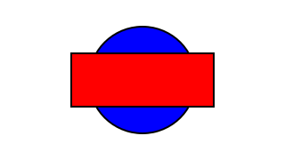
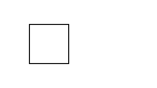
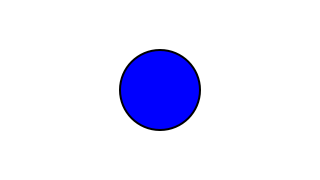
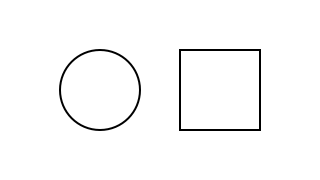

| Copyright | Written by David Himmelstrup |
|---|---|
| License | Unlicense |
| Maintainer | lemmih@gmail.com |
| Stability | experimental |
| Portability | POSIX |
| Safe Haskell | None |
| Language | Haskell2010 |
Reanimate.Scene
Description
Scenes are an imperative way of defining animations.
Synopsis
- data Scene s a
- type ZIndex = Int
- scene :: (forall s. Scene s a) -> Animation
- play :: Animation -> Scene s ()
- fork :: Scene s a -> Scene s a
- queryNow :: Scene s Time
- wait :: Duration -> Scene s ()
- waitUntil :: Time -> Scene s ()
- waitOn :: Scene s a -> Scene s a
- adjustZ :: (ZIndex -> ZIndex) -> Scene s a -> Scene s a
- withSceneDuration :: Scene s () -> Scene s Duration
- data Var s a
- newVar :: a -> Scene s (Var s a)
- readVar :: Var s a -> Scene s a
- writeVar :: Var s a -> a -> Scene s ()
- modifyVar :: Var s a -> (a -> a) -> Scene s ()
- tweenVar :: Var s a -> Duration -> (a -> Time -> a) -> Scene s ()
- simpleVar :: (a -> SVG) -> a -> Scene s (Var s a)
- findVar :: (a -> Bool) -> [Var s a] -> Scene s (Var s a)
- data Sprite s
- data Frame s a
- unVar :: Var s a -> Frame s a
- spriteT :: Frame s Time
- spriteDuration :: Frame s Duration
- newSprite :: Frame s SVG -> Scene s (Sprite s)
- newSprite_ :: Frame s SVG -> Scene s ()
- newSpriteA :: Animation -> Scene s (Sprite s)
- newSpriteA' :: Sync -> Animation -> Scene s (Sprite s)
- newSpriteSVG :: SVG -> Scene s (Sprite s)
- newSpriteSVG_ :: SVG -> Scene s ()
- destroySprite :: Sprite s -> Scene s ()
- applyVar :: Var s a -> Sprite s -> (a -> SVG -> SVG) -> Scene s ()
- spriteModify :: Sprite s -> Frame s ((SVG, ZIndex) -> (SVG, ZIndex)) -> Scene s ()
- spriteMap :: Sprite s -> (SVG -> SVG) -> Scene s ()
- spriteTween :: Sprite s -> Duration -> (Double -> SVG -> SVG) -> Scene s ()
- spriteVar :: Sprite s -> a -> (a -> SVG -> SVG) -> Scene s (Var s a)
- spriteE :: Sprite s -> Effect -> Scene s ()
- spriteZ :: Sprite s -> ZIndex -> Scene s ()
- spriteScope :: Scene s a -> Scene s a
- data Object s a
- data ObjectData a
- oNew :: Renderable a => a -> Scene s (Object s a)
- newObject :: Renderable a => a -> Scene s (Object s a)
- oModify :: Object s a -> (ObjectData a -> ObjectData a) -> Scene s ()
- oModifyS :: Object s a -> State (ObjectData a) b -> Scene s ()
- oRead :: Object s a -> Getting b (ObjectData a) b -> Scene s b
- oTween :: Object s a -> Duration -> (Double -> ObjectData a -> ObjectData a) -> Scene s ()
- oTweenS :: Object s a -> Duration -> (Double -> State (ObjectData a) b) -> Scene s ()
- oTweenV :: Renderable a => Object s a -> Duration -> (Double -> a -> a) -> Scene s ()
- oTweenVS :: Renderable a => Object s a -> Duration -> (Double -> State a b) -> Scene s ()
- class Renderable a where
- oTranslate :: Lens' (ObjectData a) (V2 Double)
- oTranslateX :: Lens' (ObjectData a) Double
- oTranslateY :: Lens' (ObjectData a) Double
- oSVG :: Getter (ObjectData a) SVG
- oContext :: Lens' (ObjectData a) (SVG -> SVG)
- oMargin :: Lens' (ObjectData a) (Double, Double, Double, Double)
- oMarginTop :: Lens' (ObjectData a) Double
- oMarginRight :: Lens' (ObjectData a) Double
- oMarginBottom :: Lens' (ObjectData a) Double
- oMarginLeft :: Lens' (ObjectData a) Double
- oBB :: Getter (ObjectData a) (Double, Double, Double, Double)
- oBBMinX :: Getter (ObjectData a) Double
- oBBMinY :: Getter (ObjectData a) Double
- oBBWidth :: Getter (ObjectData a) Double
- oBBHeight :: Getter (ObjectData a) Double
- oOpacity :: Lens' (ObjectData a) Double
- oShown :: Lens' (ObjectData a) Bool
- oZIndex :: Lens' (ObjectData a) Int
- oEasing :: Lens' (ObjectData a) Signal
- oScale :: Lens' (ObjectData a) Double
- oScaleOrigin :: Lens' (ObjectData a) (V2 Double)
- oTopY :: Lens' (ObjectData a) Double
- oBottomY :: Lens' (ObjectData a) Double
- oLeftX :: Lens' (ObjectData a) Double
- oRightX :: Lens' (ObjectData a) Double
- oCenterXY :: Lens' (ObjectData a) (V2 Double)
- oCenterX :: Lens' (ObjectData a) Double
- oCenterY :: Lens' (ObjectData a) Double
- oValue :: Renderable a => Lens' (ObjectData a) a
- oShow :: Object s a -> Scene s ()
- oHide :: Object s a -> Scene s ()
- oShowWith :: Object s a -> (SVG -> Animation) -> Scene s ()
- oHideWith :: Object s a -> (SVG -> Animation) -> Scene s ()
- oFadeIn :: SVG -> Animation
- oFadeOut :: SVG -> Animation
- oGrow :: SVG -> Animation
- oShrink :: SVG -> Animation
- oTransform :: Object s a -> Object s b -> Duration -> Scene s ()
- type Origin = (Double, Double)
- oScaleIn :: SVG -> Animation
- oScaleIn' :: Signal -> Origin -> SVG -> Animation
- oScaleOut :: SVG -> Animation
- oScaleOut' :: Signal -> Origin -> SVG -> Animation
- oDraw :: SVG -> Animation
- oSim :: (SVG -> Animation) -> SVG -> Animation
- oStagger :: (SVG -> Animation) -> SVG -> Animation
- oStaggerRev :: (SVG -> Animation) -> SVG -> Animation
- oStagger' :: Duration -> (SVG -> Animation) -> SVG -> Animation
- oStaggerRev' :: Duration -> (SVG -> Animation) -> SVG -> Animation
- newtype Circle = Circle {}
- circleRadius :: Lens' Circle Double
- data Rectangle = Rectangle {}
- rectWidth :: Lens' Rectangle Double
- rectHeight :: Lens' Rectangle Double
- data Morph = Morph {}
- morphDelta :: Lens' Morph Double
- morphSrc :: Lens' Morph SVG
- morphDst :: Lens' Morph SVG
- data Camera = Camera
- cameraAttach :: Object s Camera -> Object s a -> Scene s ()
- cameraFocus :: Object s Camera -> V2 Double -> Scene s ()
- cameraSetZoom :: Object s Camera -> Double -> Scene s ()
- cameraZoom :: Object s Camera -> Duration -> Double -> Scene s ()
- cameraSetPan :: Object s Camera -> V2 Double -> Scene s ()
- cameraPan :: Object s Camera -> Duration -> V2 Double -> Scene s ()
- liftST :: ST s a -> Scene s a
- transitionO :: Transition -> Double -> (forall s'. Scene s' a) -> (forall s'. Scene s' b) -> Scene s ()
- evalScene :: (forall s. Scene s a) -> a
Scenes
A Scene represents a sequence of animations and variables
that change over time.
The ZIndex property specifies the stack order of sprites and animations. Elements with a higher ZIndex will be drawn on top of elements with a lower index.
play :: Animation -> Scene s () Source #
Play an animation once and then remove it. This advances the clock by the duration of the animation.
Example:
doplaydrawBoxplaydrawCircle

fork :: Scene s a -> Scene s a Source #
Execute actions in a scene without advancing the clock. Note that scenes do not end before all forked actions have completed.
Example:
dofork$playdrawBoxplaydrawCircle
queryNow :: Scene s Time Source #
Query the current clock timestamp.
Example:
do now <-playdrawCircle*>queryNowplay$staticFrame1 $scale2 $withStrokeWidth0.05 $mkText$ "Now=" <> T.pack (show now)
Variables
newVar :: a -> Scene s (Var s a) Source #
Create a new variable with a default value. Variables always have a defined value even if they are read at a timestamp that is earlier than when the variable was created. For example:
do v <-fork(wait10 >>newVar0) -- Create a variable at timestamp '10'.readVarv -- Read the variable at timestamp '0'. -- The value of the variable will be '0'.
modifyVar :: Var s a -> (a -> a) -> Scene s () Source #
Modify the value of a variable at the current timestamp and all future timestamps.
tweenVar :: Var s a -> Duration -> (a -> Time -> a) -> Scene s () Source #
Modify a variable between now and now+duration.
simpleVar :: (a -> SVG) -> a -> Scene s (Var s a) Source #
Create and render a variable. The rendering will be born at the current timestamp and will persist until the end of the scene.
Example:
do var <-simpleVarmkCircle0tweenVarvar 2 $ \val ->fromToSval (screenHeight/2)
findVar :: (a -> Bool) -> [Var s a] -> Scene s (Var s a) Source #
Helper function for filtering variables.
Sprites
Sprites are animations with a given time of birth as well as a time of death. They can be controlled using variables, tweening, and effects.
Sprite frame generator. Generates frames over time in a stateful environment.
spriteDuration :: Frame s Duration Source #
Dereference duration of the current sprite.
newSprite :: Frame s SVG -> Scene s (Sprite s) Source #
Create new sprite defined by a frame generator. Unless otherwise specified using
destroySprite, the sprite will die at the end of the scene.
Example:
donewSprite$mkCircle<$>spriteT-- Circle sprite where radius=time.wait2
newSprite_ :: Frame s SVG -> Scene s () Source #
Create new sprite defined by a frame generator. The sprite will die at the end of the scene.
newSpriteA :: Animation -> Scene s (Sprite s) Source #
Create a new sprite from an animation. This advances the clock by the
duration of the animation. Unless otherwise specified using
destroySprite, the sprite will die at the end of the scene.
Note: If the scene doesn't end immediately after the duration of the
animation, the animation will be stretched to match the lifetime of the
sprite. See newSpriteA' and play.
Example:
dofork$newSpriteAdrawCircleplaydrawBoxplay$reverseAdrawBox
newSpriteA' :: Sync -> Animation -> Scene s (Sprite s) Source #
Create a new sprite from an animation and specify the synchronization policy. This advances the clock by the duration of the animation.
Example:
dofork$newSpriteA'SyncFreezedrawCircleplaydrawBoxplay$reverseAdrawBox

newSpriteSVG :: SVG -> Scene s (Sprite s) Source #
Create a sprite from a static SVG image.
Example:
donewSpriteSVG$mkBackground"lightblue"playdrawCircle
newSpriteSVG_ :: SVG -> Scene s () Source #
Create a permanent sprite from a static SVG image. Same as newSpriteSVG
but the sprite isn't returned and thus cannot be destroyed.
destroySprite :: Sprite s -> Scene s () Source #
Destroy a sprite, preventing it from being rendered in the future of the scene.
If destroySprite is invoked multiple times, the earliest time-of-death is used.
Example:
do s <-newSpriteSVG$withFillOpacity1 $mkCircle1fork$wait1 >>destroySpritesplaydrawBox

spriteModify :: Sprite s -> Frame s ((SVG, ZIndex) -> (SVG, ZIndex)) -> Scene s () Source #
Low-level frame modifier.
spriteMap :: Sprite s -> (SVG -> SVG) -> Scene s () Source #
Map the SVG output of a sprite.
Example:
do s <-fork$newSpriteAdrawCirclewait1spriteMapsflipYAxis
spriteTween :: Sprite s -> Duration -> (Double -> SVG -> SVG) -> Scene s () Source #
Modify the output of a sprite between now and now+duration.
Example:
do s <-fork$newSpriteAdrawCirclespriteTweens 1 $ \val ->translate(screenWidth*0.3*val) 0
spriteE :: Sprite s -> Effect -> Scene s () Source #
Apply an effect to a sprite.
Example:
do s <-fork$newSpriteAdrawCirclespriteEs $overBeginning1fadeInEspriteEs $overEnding0.5fadeOutE
spriteZ :: Sprite s -> ZIndex -> Scene s () Source #
Set new ZIndex of a sprite.
Example:
do s1 <-newSpriteSVG$withFillOpacity1 $withFillColor"blue" $mkCircle3newSpriteSVG$withFillOpacity1 $withFillColor"red" $mkRect8 3wait1spriteZs1 1wait1

spriteScope :: Scene s a -> Scene s a Source #
Destroy all local sprites at the end of a scene.
Example:
do -- the rect lives through the entire 3s animationnewSpriteSVG_$translate(-3) 0 $mkRect4 4wait1spriteScope$ do -- the circle only lives for 1 second. local <-newSpriteSVG$translate3 0 $mkCircle2spriteElocal $overBeginning0.3fadeInEspriteElocal $overEnding0.3fadeOutEwait1wait1

Object API
Objects are SVG nodes (represented as Haskell values) with identity, location, and several other properties that can change over time.
data ObjectData a Source #
Container for object properties.
oModify :: Object s a -> (ObjectData a -> ObjectData a) -> Scene s () Source #
Modify object properties.
oModifyS :: Object s a -> State (ObjectData a) b -> Scene s () Source #
Modify object properties using a stateful API.
oTween :: Object s a -> Duration -> (Double -> ObjectData a -> ObjectData a) -> Scene s () Source #
Modify object properties over a set duration.
oTweenS :: Object s a -> Duration -> (Double -> State (ObjectData a) b) -> Scene s () Source #
Modify object properties over a set duration using a stateful API.
oTweenV :: Renderable a => Object s a -> Duration -> (Double -> a -> a) -> Scene s () Source #
Modify object value over a set duration. This is a convenience function
for modifying oValue.
oTweenVS :: Renderable a => Object s a -> Duration -> (Double -> State a b) -> Scene s () Source #
Modify object value over a set duration using a stateful API. This is a
convenience function for modifying oValue.
class Renderable a where Source #
Objects can be any Haskell structure as long as it can be rendered to SVG.
Instances
Object Properties
oTranslate :: Lens' (ObjectData a) (V2 Double) Source #
Object position. Default: <0,0>
oTranslateX :: Lens' (ObjectData a) Double Source #
Object X position. Default: 0
oTranslateY :: Lens' (ObjectData a) Double Source #
Object Y position. Default: 0
oSVG :: Getter (ObjectData a) SVG Source #
Rendered SVG node of an object. Does not include context or object properties. Read-only.
oContext :: Lens' (ObjectData a) (SVG -> SVG) Source #
Custom render context. Is applied to the object for every frame that it is shown.
oMargin :: Lens' (ObjectData a) (Double, Double, Double, Double) Source #
Object margins (top, right, bottom, left) in local units.
oMarginTop :: Lens' (ObjectData a) Double Source #
Object's top margin.
oMarginRight :: Lens' (ObjectData a) Double Source #
Object's right margin.
oMarginBottom :: Lens' (ObjectData a) Double Source #
Object's bottom margin.
oMarginLeft :: Lens' (ObjectData a) Double Source #
Object's left margin.
oBB :: Getter (ObjectData a) (Double, Double, Double, Double) Source #
Object bounding-box (minimal X-coordinate, minimal Y-coordinate,
width, height). Uses boundingBox
and has the same limitations.
oShown :: Lens' (ObjectData a) Bool Source #
Toggle for whether or not the object should be rendered. Default: False
oEasing :: Lens' (ObjectData a) Signal Source #
Easing function used when modifying object properties.
Default: curveS 2
oScaleOrigin :: Lens' (ObjectData a) (V2 Double) Source #
Origin point for scaling. Default: <0,0>
oTopY :: Lens' (ObjectData a) Double Source #
Derived location of the top-most point of an object + margin.
oBottomY :: Lens' (ObjectData a) Double Source #
Derived location of the bottom-most point of an object + margin.
oLeftX :: Lens' (ObjectData a) Double Source #
Derived location of the left-most point of an object + margin.
oRightX :: Lens' (ObjectData a) Double Source #
Derived location of the right-most point of an object + margin.
oValue :: Renderable a => Lens' (ObjectData a) a Source #
Lens for the source value contained in an object.
Graphics object methods
oShowWith :: Object s a -> (SVG -> Animation) -> Scene s () Source #
Show object with an animator function. The animator is responsible for transitioning the object from invisible to having its final shape. If this doesn't hold true for the animator function then the final animation will be discontinuous.
oHideWith :: Object s a -> (SVG -> Animation) -> Scene s () Source #
Hide object with an animator function. The animator is responsible for transitioning the object from visible to invisible. If this doesn't hold true for the animator function then the final animation will be discontinuous.
oTransform :: Object s a -> Object s b -> Duration -> Scene s () Source #
Morph source object into target object over a set duration.
oScaleIn :: SVG -> Animation Source #
Scale in children from left to right, with an origin at the top of each child.
Example:
do txt <-oNew$withStrokeWidth0 $withFillOpacity1 $center$scale3 $latex"oScaleIn"oShowWithtxt $adjustDuration(*2) .oScaleInwait1;oHideWithtxtoFadeOut
oScaleIn' :: Signal -> Origin -> SVG -> Animation Source #
Like oScaleIn but takes an easing function and an origin.
oScaleOut :: SVG -> Animation Source #
Scale out children from left to right, with an origin at the bottom of each child.
Example:
do txt <-oNew$withStrokeWidth0 $withFillOpacity1 $center$scale3 $latex"oScaleOut"oShowWithtxtoFadeInoHideWithtxt $adjustDuration(*2) .oScaleOut
oScaleOut' :: Signal -> Origin -> SVG -> Animation Source #
Like oScaleOut but takes an easing function and an origin.
oStagger :: (SVG -> Animation) -> SVG -> Animation Source #
Animate each child node in parallel, staggered by 0.2 seconds.
oStaggerRev :: (SVG -> Animation) -> SVG -> Animation Source #
Animate each child node in parallel, staggered by 0.2 seconds and in reverse order.
oStagger' :: Duration -> (SVG -> Animation) -> SVG -> Animation Source #
Animate each child node in parallel, staggered by a given duration.
oStaggerRev' :: Duration -> (SVG -> Animation) -> SVG -> Animation Source #
Animate each child node in parallel, staggered by given duration and in reverse order.
Pre-defined objects
Basic object mapping to <circle/> in SVG.
Constructors
| Circle | |
Fields | |
Instances
Basic object mapping to <rect/> in SVG.
Constructors
| Rectangle | |
Fields
| |
Instances
Object representing an interpolation between SVG nodes.
Instances
morphDelta :: Lens' Morph Double Source #
Control variable for the interpolation. A value of 0 gives the source SVG and 1 gives the target svg.
Cameras can take control of objects and manipulate them with convenient pan and zoom operations.
Constructors
| Camera |
Instances
cameraAttach :: Object s Camera -> Object s a -> Scene s () Source #
Connect an object to a camera such that camera settings (position, zoom, and rotation) is applied to the object.
Example
do cam <-newObjectCameracirc <-newObject$Circle2oModifyScirc $oContext.=withFillOpacity1 .withFillColor"blue"oShowcirccameraAttachcam circcameraZoomcam 1 2cameraZoomcam 1 1

cameraFocus :: Object s Camera -> V2 Double -> Scene s () Source #
Example
do cam <-newObjectCameracirc <-newObject$Circle2;oShowcircoModifycirc $oTranslate.~ (-3,0) box <-newObject$Rectangle4 4;oShowboxoModifybox $oTranslate.~ (3,0)cameraAttachcam circcameraAttachcam boxcameraFocuscam (-3,0)cameraZoomcam 2 2 -- Zoom incameraZoomcam 2 1 -- Zoom outcameraFocuscam (3,0)cameraZoomcam 2 2 -- Zoom incameraZoomcam 2 1 -- Zoom out

cameraSetZoom :: Object s Camera -> Double -> Scene s () Source #
Instantaneously set camera zoom level.
cameraZoom :: Object s Camera -> Duration -> Double -> Scene s () Source #
Change camera zoom level over a set duration.
cameraSetPan :: Object s Camera -> V2 Double -> Scene s () Source #
Instantaneously set camera location.
cameraPan :: Object s Camera -> Duration -> V2 Double -> Scene s () Source #
Change camera location over a set duration.
ST internals
transitionO :: Transition -> Double -> (forall s'. Scene s' a) -> (forall s'. Scene s' b) -> Scene s () Source #
Apply a transformation with a given overlap. This makes sure to keep timestamps intact such that events can still be timed by transcripts.